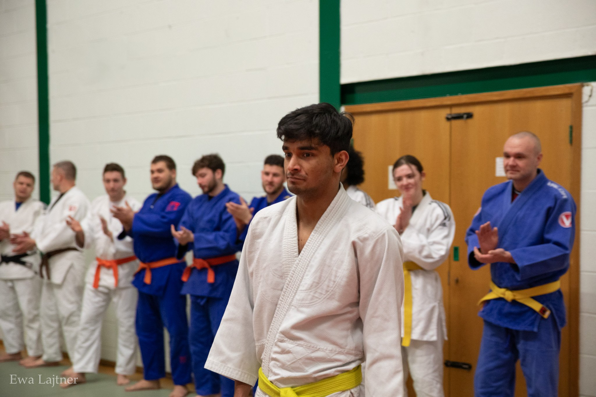
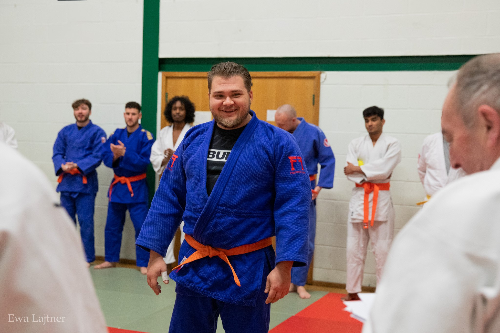
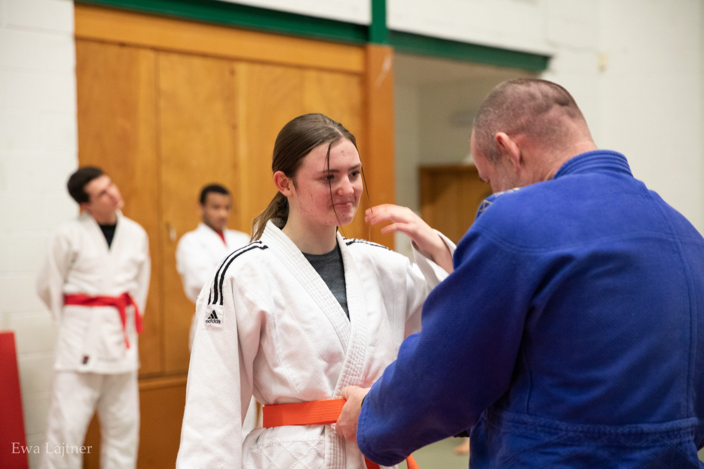
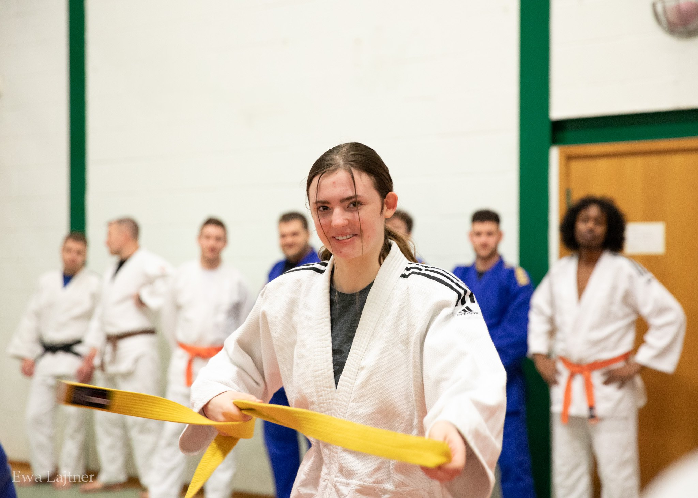

01 Northampton’s home of judo since 1982
Find your feet.
Own the mat.
Friendly, expert coaching for complete beginners, returning Judoka and competitors — from age five upwards.
Your first class, sorted
Start in three.
- 01Pick a classJunior, adult or BJJ — beginners fit right in.
- 02Bring yourselfComfortable sports clothes are all you need.
- 03Try a week freeMeet the coaches and find your rhythm.
A place for every player
Choose your way in.
Learn the fundamentals, build confidence and progress at your own pace. Every class is coached for mixed experience levels.


65+
8-week course
Learning to Fall
Adapted judo techniques for safer falling, better balance and more confidence.
Ask about the next course →Life on the mat
Real people.
Real progress.
Belts mark progress, but the moments between them make the club: the first breakfall, a technique finally clicking, teammates cheering each other on.




Northampton Judo Club gallery · Training, grading and community
Every payment option
Train your way.
Prices are per month unless marked “per class”. Junior and student prices are identical; separate checkout buttons keep the membership category correct.
One adult player. Monthly plans repeat through Stripe; drop-in is one payment for one class.
One player: junior or student. The price is the same; select the matching checkout so the club records the right membership.
Two junior siblings from the same family. These are discounted combined prices—the amount shown covers both children, not each child.
Club fees are paid through Stripe. British Judo Association membership ↗ is separate and provides insurance, grading and competition eligibility.
 Northampton Judo Club · 1982
Northampton Judo Club · 1982Built in Northampton
More than a dojo.
A community.
Founded by Brian Atkins in 1982, the club grew from 18 second-hand mats in a handmade frame to a home for generations of Judoka.
Brian Atkins, David Tompkins and Clive Douglas were there in the opening weeks. Their knowledge and spirit still shape a club built on respect, discipline and perseverance.
1982Founded in
Northampton
Northampton
The Judo Moral Code
How we show up.
These principles guide how we train, compete and treat one another — on and off the tatami.
CourtesyCourageHonestyHonourModestyRespectSelf-controlFriendship
Learn from experience
Coaching with pedigree.
National champions, international medallists and decades of experience — delivered in a welcoming, community-led environment.

From complete beginners to seasoned competitors, every Judoka is met at their level.
A Level 2 British Judo Coach, Clive has won five World Masters bronze medals, European Masters gold and titles across Canada, Europe and the UK. He has coached internationally and holds First Aid, Child Protection and DBS certification.
Read full biography →A Level 2 British Judo Coach and two-time British Masters Champion, Brian founded the current Northampton Judo Club. He competed at the 2003 World Masters Championships at the Kodokan in Tokyo and holds First Aid, Child Protection and DBS certification.
Read full biography →A Level 2 British Judo Coach and member since the club’s founding, David competed at the 2003 World Masters Championships in Japan. As a Senior BJA Examiner he can grade Judoka through to 5th Dan, and holds First Aid, Child Protection and DBS certification.
Read full biography →An IJF-certified and Level 2 British Judo Coach with more than 30 years’ experience, Imi is a three-time national champion and former Austrian Bundesliga athlete. He holds a coaching degree specialising in judo and additional adaptive-coaching certification.
Read full biography →Julia develops Judoka from their first sessions through to competition, specialising in technical development, preparation and athlete progression. Her Brazilian Jiu-Jitsu cross-training adds broader grappling insight to a supportive, individual coaching approach.
Read full biography →An accomplished national and international competitor from a judo family, Yona combines elite sporting experience with clear, adaptable coaching. Her sessions focus on strong fundamentals, grip fighting, efficient movement, confidence and tactical awareness.
Read full biography →A Level 2 British Judo Coach and Brazilian Jiu-Jitsu 3rd Degree Brown Belt, Steve leads the youth programme and specialises in transitions and groundwork. He is a British Masters Judo bronze medallist, British Masters BJJ 2024 Champion and member of the British Judo Masters Squad, with First Aid, Child Protection and DBS certification.
Read full biography →Charles is a 3rd Dan Japanese Ju Jitsu, Level 3 Ju Jitsu and Level 1 British Judo Coach with more than 27 years’ experience. He is the 2024 British Judo Masters Champion, a British Ju Jitsu Midlands silver medallist and National bronze medallist, with First Aid, Child Protection and enhanced DBS certification.
Read full biography →Clive Douglas is a 7th Dan coral belt and Level 2 British Judo Coach, fully certified in First Aid, Child Protection and DBS-checked.
A former member of the GB Olympic Judo Squad, Clive built a formidable reputation on the elite competition circuit before continuing to excel at Masters level. He has earned five bronze medals at the World Masters Championships, including one in Japan, and claimed gold at the European Masters. His competitive achievements also include victories at the Canadian Masters and multiple gold medals across North America, Europe and the UK.
Clive’s passion for Judo extends beyond the tatami. He has shared his knowledge across the UK, Europe, Canada, Germany, Australia and Thailand, inspiring Judoka of every level with his technical insight and deep love for the sport.
His 7th Dan coral belt reflects not only technical excellence but a lifetime of contribution to Judo. Clive remains a driving force behind the growth of others, both on and off the mat.
Brian Atkins is a 5th Dan black belt and Level 2 British Judo Coach, fully certified in First Aid, Child Protection and DBS-checked.
He is the founder of the current Northampton Judo Club—a reflection of his vision, leadership and lifelong devotion to the sport.
As a competitor, Brian enjoyed success at both mainstream and Masters levels, becoming a two-time British Masters Champion. One of his proudest career moments came in 2003, when he competed at the World Masters Championships at the historic Kodokan in Tokyo, Japan.
Alongside his coaching, Brian serves as Chairman of Northampton Judo Club. His wisdom, experience and mentorship continue to shape the club and influence generations of Judoka.
David Tompkins is a 5th Dan black belt and Level 2 British Judo Coach, fully certified in First Aid, Child Protection and DBS-checked.
A long-standing figure in British Judo, David brings decades of experience and technical mastery to Northampton Judo Club. He began his Judo journey in London and has been a proud part of the club since its founding, competing at the highest levels—including the 2003 World Masters Championships in Japan.
As a Senior BJA Examiner and Referee, David holds the authority to grade Judoka through to 5th Dan. This rare responsibility makes him instrumental in the technical development of club members.
His deep knowledge, calm presence and commitment make him an exceptional mentor, guiding students with precision and respect for tradition.
Imi Baricz is a 4th Dan black belt, IJF-certified coach and Level 2 British Judo Coach, fully certified in First Aid, Child Protection and DBS-checked.
Imi began Judo at six and now has more than 30 years’ experience. A three-time national champion, he won the Paris European Cup three times and the Vienna International Competition twice, alongside silver at the Siena International Championship and gold at the Budapest Cup. He also competed in the Austrian Bundesliga and contributed to multiple team championships.
He holds a university degree in coaching specialising in Judo, plus an adaptive-coaching certificate focused on young talent with disabilities.
Specialising in Tachiwaza and transitions into Newaza, Imi builds individual training around physical, mental and tactical development. His aim is to cultivate not only champions on the mat, but disciplined and resilient people.
Julia Halstead is an experienced Judoka and coach, holding a 3rd Dan black belt and Level 3 British Judo Association coaching qualification. She also cross-trains in Brazilian Jiu-Jitsu, bringing additional grappling insight to her Judo coaching.
Julia has a proven record of developing athletes at every level, from complete beginners to competitive Judoka. She specialises in technical skill development, competition preparation and long-term athlete progression.
Her holistic approach balances physical, mental and tactical growth, tailoring training to each individual. As the club’s Safeguarding Officer, she helps maintain the supportive, challenging environment in which members can thrive.
Yona Miagan is an accomplished Judoka and coach, bringing international pedigree and lifelong experience to her teaching.
Raised in a Judo family, Yona is the daughter of Helena Papilija, an Olympic Judoka who competed at the 1988 Seoul Olympic Games. Immersion in elite-level Judo from an early age shaped her technical understanding, discipline and passion for the sport.
Yona has competed successfully at national and international level. She is recognised for clear technical instruction, attention to detail and an ability to adapt Judo for athletes of all ages and abilities.
Her sessions combine strong fundamentals, intelligent grip fighting and efficient movement with confidence, resilience and tactical awareness—balancing traditional Judo values with modern competition insight.
Steve Freezer is a 1st Dan black belt and Level 2 British Judo Coach, fully certified in First Aid, Child Protection and DBS-checked. He also holds a Brazilian Jiu-Jitsu 3rd Degree Brown Belt.
Steve brings a dynamic blend of Judo and Brazilian Jiu-Jitsu experience to the club, specialising in transitional grappling and groundwork. He developed an approach that bridges standing techniques with smooth, effective Newaza transitions.
He is the British Masters BJJ 2024 Champion, a British Masters bronze medallist in Judo and a member of the British Judo Masters Squad.
Steve’s analytical teaching style breaks techniques into clear reference points and multiple attacking pathways, helping students understand, adapt and apply what they learn. He also leads the kids programme, developing the next generation with discipline, technical detail and fun.
Charles Pritchard holds a 3rd Dan black belt in Japanese Ju Jitsu, is a Level 3 Ju Jitsu Coach and Level 1 British Judo Coach, with full certification in First Aid, Child Protection and an enhanced DBS check.
With more than 27 years of training in Japanese Ju Jitsu and Judo, Charles currently holds a 1st Kyu brown belt in Judo and is working towards his Dan grade.
Charles is the 2024 British Judo Masters Champion, a 2024 British Ju Jitsu Midlands silver medallist and a 2024 British Ju Jitsu National bronze medallist. His hybrid coaching style combines the efficiency and structure of Japanese Ju Jitsu with the athleticism and flow of modern Judo.
His practical self-defence teaching is rooted in years of applied study. As Club Treasurer, he also supports operations, growth and long-term stability behind the scenes.
Charles leads with calm authority, technical insight and a belief in lifelong learning, representing the discipline, humility and perseverance at the heart of traditional martial arts.
“
The coaches are attentive and experienced and push you to be the best you can be. There’s no better place to start your judo journey.Jessica · Club member
Train with confidence
A safe place to grow.
Qualified coaching, clear club standards and dedicated safeguarding support are part of every session.
Ready when you are
Step onto the mat.
Your first week is completely free. Send us a message and a friendly coach will help you choose the right class.
Start your free week →Old Towcester Road
Northampton
NN4 8DG
Talk to usaction@northamptonjudo.com